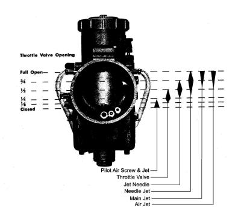
¶ OK, the drill is this. Make sure the engine is at normal operating temperature, not too hot or too cold. Now, with a new or very clean spark plug, run the engine, at the throttle position you want to test. Run the engine for a mile or two on a flat road. Now kill the ignition, chop the throttle (turn it off!), pull the clutch in and coast to a stop. Take the spark plug out and look at it. Does it read rich, normal or lean? Now comes the fun stuff. If you are not happy with the spark plug reading or how the engine performed you need to change a jet. You want smooth running in all throttle positions, with good plug color.
To help figure out which jet, throttle position is most important. Put a piece of masking tape around the throttle housing and a small piece on the throttle grip it's self. With the throttle shut, make coinciding marks on both pieces of tape. Now open the throttle wide open. Make another mark on the throttle housing matching the one you already made on the grip. Measure the distance between idle and full throttle. Divide that distance in quarters and put more marks on the tape. Now you can tell at what throttle settings the problem is occurring.
Now all this is real phony baloney as far as preciseness is concerned. Don't waste your time getting minute of arc accuracy although I suppose it would not hurt. Remember everything overlaps. You just want to know the general area or throttle position where the problem lies. Then adjust the jet(s) that control that area. Then Retest.
This can be a great (?) way to spend your yearly two week vacation. I once watched a friend do exactly that. He put a gigantic Mikuni Carburetor on a 350cc Honda single. It came pre-set supposedly. That was a joke. It ran as smooth as stock when he finished. No extra power but it was one BIG Carburetor. I told him it would not get him any extra power but no one ever listens to me. I'm used to it.
Yeah, I know, this might take forever... or not! Who knows. Some people get it on the very first try but not me. The factories have Dynamometers and other fancy stuff. This makes everything a lot easier, not to mention safer. Roaring down the road at 120 MPH trying to get a Main Jet reading is not as fun as it might first appear.
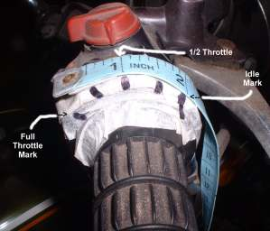 Throttle Marks 1 |
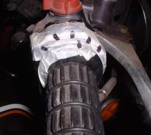 Throttle Marks 2 |
Another thing to consider is the fact that engines change over time as their parts wear and engine compression changes. As the engine compression goes down, over time and miles, the suction or vacuum in the Carburetor Venturi is less then it was when the engine was new. Because there is less suction there tends to be less fuel mixture pulled into the engine so the engine may run a bit lean. The cure is bigger (Richer) jets. This can happen in reverse when you put on a big bore kit. The bigger engine can suck too much fuel mixture making the engine run rich. Smaller (Leaner) jets cure this.
Make sure the engine is a normal operating temperature. If the engine is too hot or too cold it will run funny. If you just need a touch more richness try running the fuel level at the highest level. Usually the float level specifications have a plus/minus range. If the level is just a bit higher it is easier for the engine vacuum to suck in the fuel. Same with if it is a bit lower, it will be harder to suck in the fuel. This effect is very, very, minimal but might be useful to you.
Basically, if the engine is not running right, it is running either too rich or too lean. Here are some vague, but perhaps useful things to look for.
- Engine noise is dull and intermittent
- Things get worse when choke or enrichener is turned on.
- Things get worse when engine gets hot.
- If you remove the air cleaner, things get somewhat better.
- Exhaust fumes are heavy.
- Spark plug is fouled black, dry and sooty.
- Engine gets over heated.
- Things improves when choke or enrichener is turned on.
- Acceleration is poor.
- Spark plug is whitish or burned.
- Engine Speed fluctuates. Noticeable Lack of power.
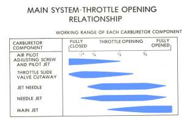 Jet Ranges 1 |
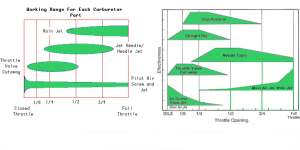 Jet Ranges 2 |
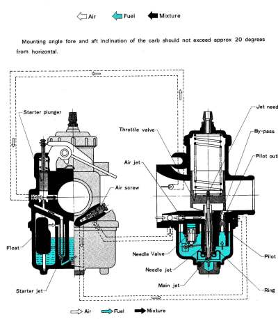
Carburetor Parts
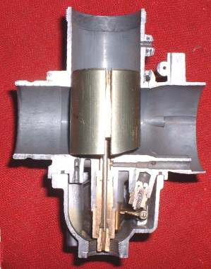 Idle Cutaway |
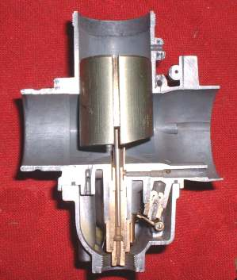 Quarter Throttle Cutaway |
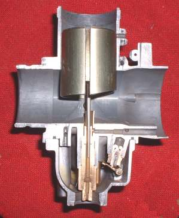 Three Quarters Throttle Cutaway |
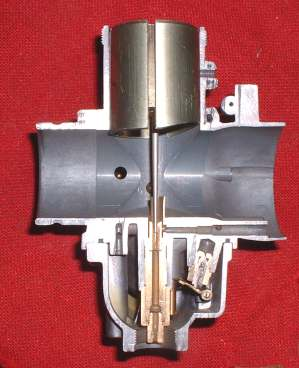 Full Throttle Cutaway |
So this is the end of my Bloviation on Carburetors for now. Hopfully my idle words have helped you to understand the inner workings of your Mechanical Slide Carburetor a little better.
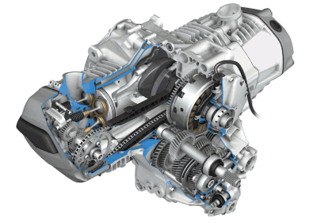 |
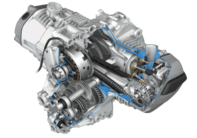 |
Copyright © 1999-2015 dansmc.com. All rights reserved.